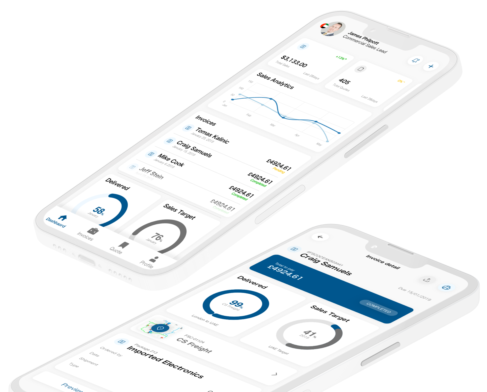
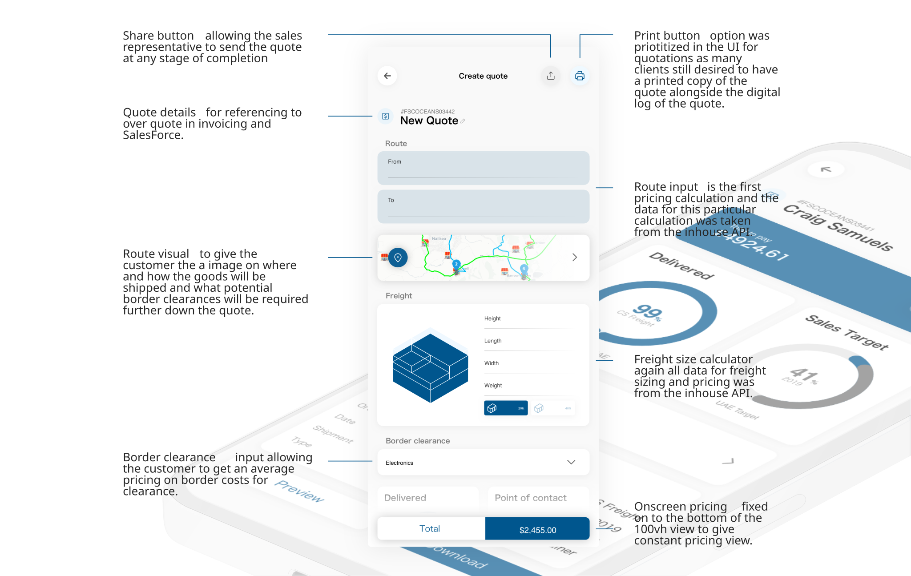

IFSC Group
A guided freight-calculation and sales dashboard experience built around operational confidence.

Operational tools should make expertise easier to apply.
Reps worked across spreadsheets, tariff rules, and multi-leg cargo scenarios. The opportunity was to bring the work into one guided flow without flattening the complexity.
Start with the work, not the interface.
I mapped how quotes were created, checked, handed off, and revised to identify the moments where errors and back-and-forth accumulated.
Guidance reduces avoidable error.
Templates and validation make complex work more repeatable.
The dashboard is a coordination tool.
Observation, stakeholder alignment, and prototype feedback kept the work grounded in real constraints.
Turn complexity into a usable point of view.
We framed the product around guided quoting, operational visibility, and confidence across handoffs.
Understand people, constraints, hardware, data, and context.
Make the problem and decision model legible to the team.
Prototype flows, states, and edge cases across surfaces.
Test, refine, and create reusable patterns that last.
Turn fragmented work into a shared flow.
The experience connects quoting, approvals, and shipment status so sales and operations can work from the same source of truth.

A guided quote flow reduces ambiguity across teams and stages.
A platform people can operate together.
The system gives non-technical users enough structure to move quickly without losing control.
More consistent work across handoffs.
The product supports expertise rather than forcing people to remember the system.
Patterns over one-off screens.
Reusable interaction and content structures create leverage across the wider product ecosystem.
More work across the system.
See the rest of the portfolio, or get in touch about a complex product problem.
Back to selected work